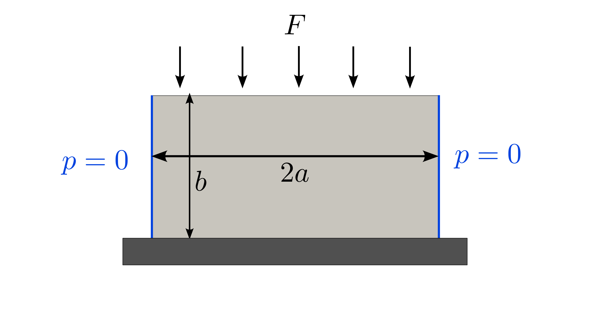
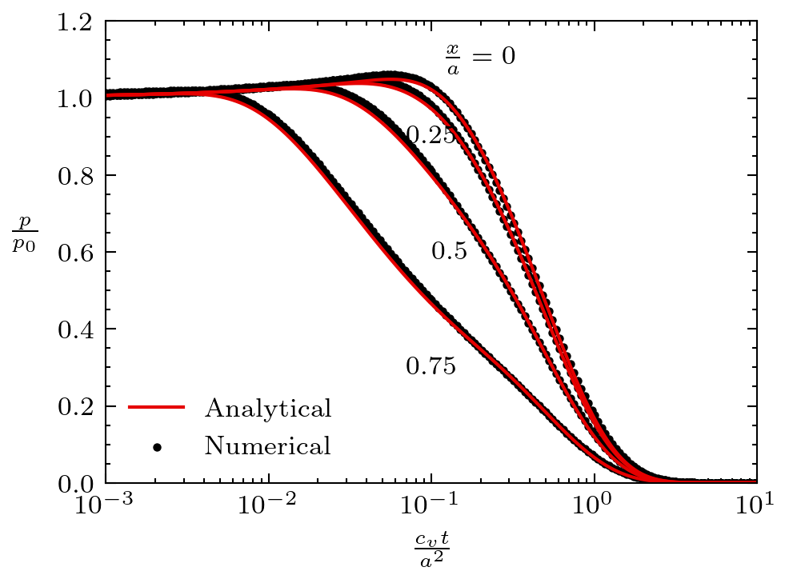
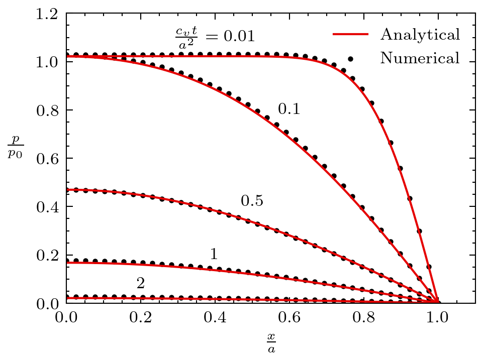
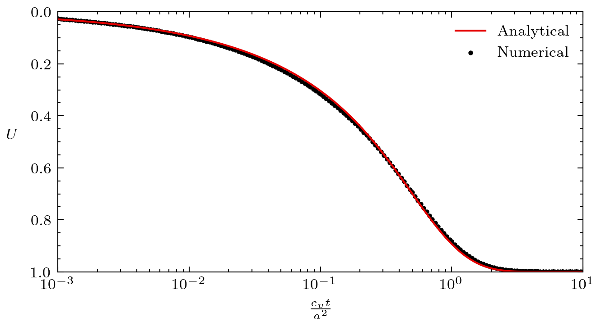

Mandel's problem
The original Mandel's problem considered a rectangular soil sample subject to a constant force (vertical stress) at its top where the fluid and the solid were incompressible. Here we consider the extension of the Mandel's problem in which the fluid and solid particles are compressible. This extension to the Mandel's problem was first introduced by Cheng and Detournay (1988).
Setup
A rectangular soil sample (width and height ) is subject to a vertical stress at its top through a rigid and frictionless plate of length . The lateral boundary of the sample are drained and deformation is in-plane. At the vertical force of magnitude is applied and fluid pressure increases due to poroelastic effect. It then drains out of the lateral boundary over time. See a sketch of this setup in Figure 1.

Figure 1: Setup for the Mandel's problem.
Parameters
Table 1: List of parameters used for the Mandel's problem.
| Symbol | Value | Unit | Name |
|---|---|---|---|
| Pa | Bulk modulus | ||
| - | Poisson's ratio | ||
| - | Biot's poroelastic coefficient | ||
| m | Permeability | ||
| Pa s | Fluid viscosity | ||
| - | Porosity | ||
| Pa | Fluid bulk modulus | ||
| Pa | Applied force |
Here are definitions of some poroelastic parameters:
Solid bulk modulus:
Storage coefficient:
Undrained bulk modulus:
Skempton's coefficient:
Undrained Poisson's ratio:
Consolidation coefficient:
Solutions
The solutions for this problem are given by Cheng and Detournay (1988). The fluid pressure solution is given as:
(1)where:
The vertical displacement solution is given as:
(2)where
and
The coefficient are the roots verifying the following equations:
(3)
Figure 2: Fluid pressure solution for the Mandel's problem.

Figure 3: Fluid pressure solution for the Mandel's problem.

Figure 4: Consolidation solution for the Mandel's problem.
Complete Source Files
References
- Alexander H.‐D. Cheng and Emmanuel Detournay.
A direct boundary element method for plane strain poroelasticity.
International Journal for Numerical and Analytical Methods in Geomechanics, 12(5):551–572, 1988.
doi:10.1002/nag.1610120508.[BibTeX]